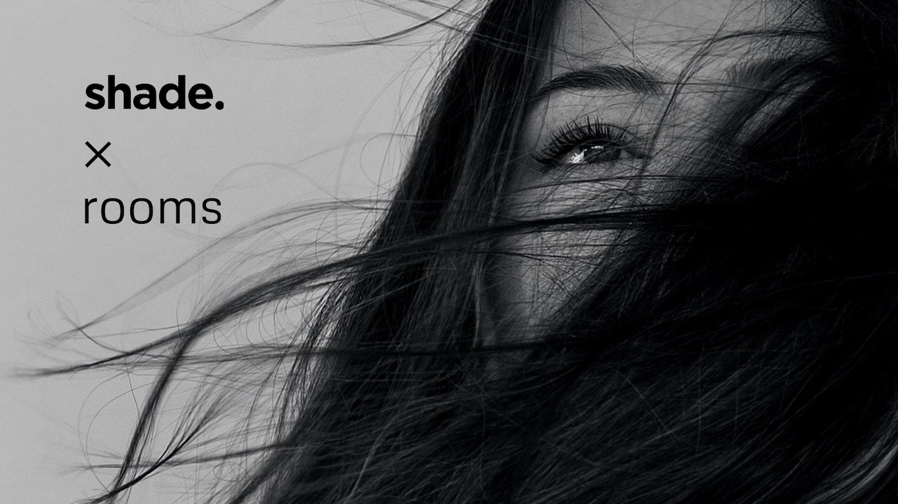

commission for Shade Studio

I recently worked on a commission track for Shade wellbeing hair studio.
Shade is a beautiful hair studio in Manchester, offering cuts, colours and other consultations - and also hosting a free weekly yoga class.
Jay, the owner of Shade, was looking for sounds that would complement the ambience in the studio - calm and grounded, but also uplifting and hopeful.
Setting the tone
We discussed the possible directions for the project and decided the piece needed to sound organic and natural, rather than too electronic.
Jay created an inspiration playlist to share with me, which set the tone: ascending, ambient, inspired by spiritual wellbeing.
Sounds from the studio
After listening, I proposed that we use sounds from the studio itself in the piece to create a physical feeling, rather than digital synths or samples.
We organised a field recording session, where I took my Zoom H5 stereo field mic and recorded samples from various objects around the salon: hair foils, cupboard doors, combs, funnels.
I was then able to manipulate these sounds to become musical and form the basis of the track. A metal funnel found in the salon became the star of the show. After taking an initial recording, I tuned the sample, stretched it out, and was able to play the resonating sound at multiple pitches to make chords.
Speaking in chords
I wanted to go further in making the piece deeply linked to the space. In some of my recordings, I captured some of the Shade team along with a couple of customers in the background.
When we speak, we all speak at specific frequencies - or notes. Some of us might speak using the frequencies of C, E flat or B. Others will speak in different notes.
I analysed the voices of the people in the studio that day and listed all the notes used by their voices. I then had a palette of notes to work with, which needed a little curation (they wouldn't all necessarily sound harmonious if used together).
I noticed that many of these notes are present in the B mixolydian mode (or key), which gives a floating, everlasting feeling. A perfect choice for the key for the track.
The finished piece
The finished track is made entirely of sounds found within the salon, and uses frequencies derived from the voices of the Shade team and customers. In this way, the piece is totally unique to the Shade space.
I'm really proud of the finished piece and Jay is thrilled with the outcome. I loved working on this commission to help bring this space alive!
Find out more about Shade or listen to the finished piece on YouTube.